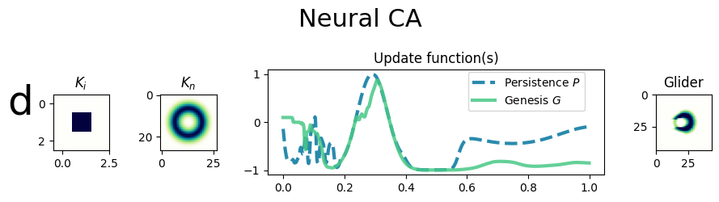
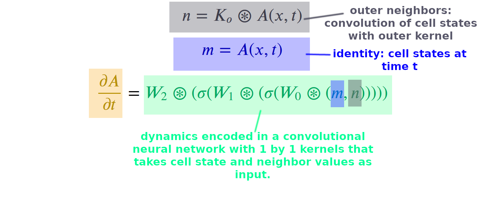

Glider neural cellular automata: a cellular automata combining the radial Gaussian style of neighborhood kernel with neural network dynamics.

In the NCA example shown here, the NCA update fits directly into the Euler method (no truncation function necessary). Dynamics are encoded in a 2d convolutional network with 1 by 1 kernels and 2 hidden layers, which takes as input channels the current cell states and neighborhoods at time t. [One of the hidden layers is omitted above for brevity].
Q. Tyrell Davis, "Discretization-Dependent Dissolution of Gliders in (Dis)Continuous Systems: Non-Platonic Self-Organization in Complex Systems", Innovations in Machine Intelligence (IMI), vol.3, pp. 1-23, 2023. DOI:10.54854/imi2023.01